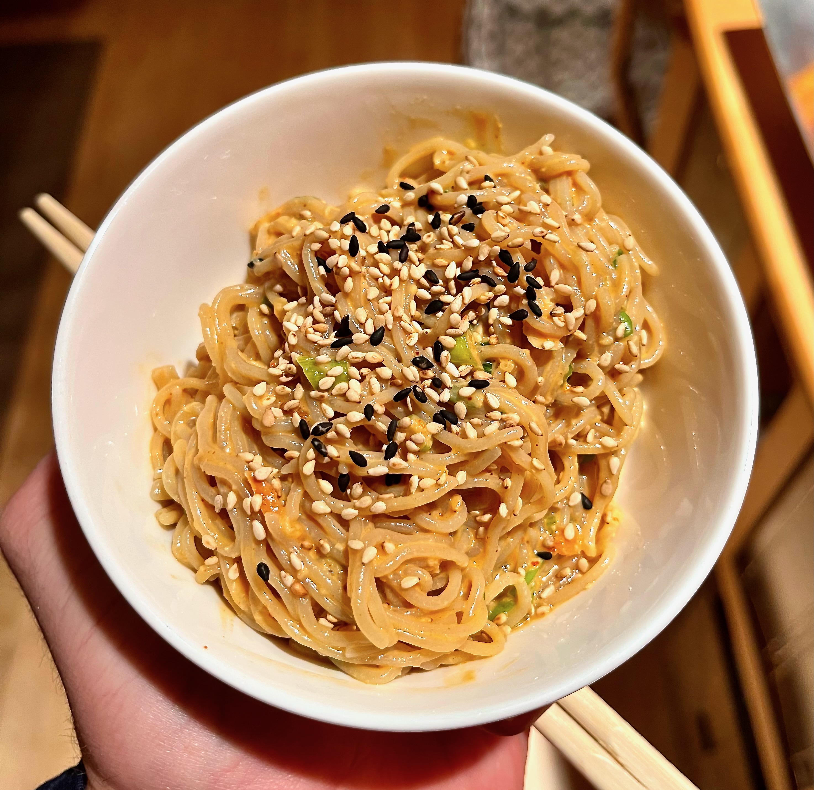

Seasame Noodles

Ingredients
- 1 pound of thin spaghetti or angel hair
- 2 Tbsp seasame oil
- 4 Tbsp soy sauce
- 2 Tbsp rice vinegar
- 2 Tbsp tahini
- 2 Tbsp toasted white seasame seeds, mortar and pestled
- 1 tsp black seasame seeds
- 4 green onions, finely sliced
- 2 cloves garlic, micro planed
Steps
- Cook the pasta in boiling water and reserve a cup of the pasta water.
- Combine the seasame oil, soy sauce, rice vinegar, garlic, and ground white sesame seeds in a seperate bowl
- Stir the sauce into the cooked pasta using the starchy pasta water to develop the perfect sauce consitency
- Add the green onions and black seasame seeds to finish it off!
- Place in a bowl and start slurping!